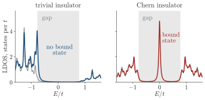
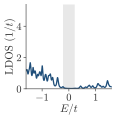

Page 11 of 15 of this session
9.8 Impurities as diagnostics III, vacancies in topological matter
Can one missing atom tell a topological insulator from a trivial one with the same gap? We will now see that a vacancy binds an in-gap state when the bulk invariant is not zero and the vacancy keeps the symmetry that protects it. When the gap is close to closing, this state can sit so close to a band edge that no separate peak is seen. We check this on a Chern insulator and on a trivial insulator of the honeycomb lattice, computed with pyqula.
\[\sigma_{xy} = \frac{e^2}{h}\, C, \qquad C = \sum_{n\ \text{filled}} \frac{1}{2\pi}\int_{\text{BZ}} \Omega_n(k)\, d^2k. \tag{3.4}\]
This is the Chern number of Section 3.5, the integral of the Berry curvature \(\Omega_n(k)\) of the filled bands over the Brillouin zone, divided by \(2\pi\). It fixes the Hall conductivity \(\sigma_{xy}\), and for a gapped system it is an integer. It is the bulk invariant of the Chern insulators of this page.
The strongest local impurity that is possible is a vacancy, where we remove a site completely, which is the same as sending its onsite potential to infinity. Here the bulk-boundary correspondence of Section 3.7, which we used in Session 3 and Session 4, gives a direct result. It relates the Chern number of Section 3.5 and the Zak phase of Section 3.9c to the gapless modes at any boundary of a topologically non-trivial phase.
It is known that topological boundary modes survive around a large hole cut into a topological material. If we make that hole smaller, down to a single missing site, the argument still works. A vacancy is in practice a boundary of zero size, and the bulk-boundary correspondence still applies. When the bulk has a non-trivial topological invariant, a vacancy is guaranteed to host an in-gap bound state, as long as the vacancy itself preserves the symmetry that protects that invariant.
This gives a useful diagnostic, because a fully gapped bulk spectrum alone cannot distinguish a topological phase from a trivial one. Let us take a chiral, spin-triplet topological superconductor, which is the chiral p-wave class of Section 5.14, with the Majorana modes of Section 5.15. Without impurities, its bulk spectrum is fully gapped, and by itself it looks the same as the spectrum of a trivial s-wave superconductor. But a vacancy is a non-magnetic perturbation. It is a local change of the potential that does not distinguish spin, even in the extreme limit where the local potential diverges. So it does not change the topological invariant of the bulk, and once we add it, an in-gap mode appears.
The same logic holds for a Chern insulator, such as the Haldane model of Section 3.10b. A vacancy in a system with a finite Chern number gives an in-gap mode, while the same vacancy in a topologically trivial insulator gives no such mode. In both cases the observable signature is the same and easy to read.
If vacancies produce in-gap modes, the underlying phase is topological, and if they do not, the phase is trivial, regardless of what the clean bulk spectrum alone would tell us. The vacancy must keep the symmetry that protects the invariant. In a chain with chiral symmetry, such as the SSH chain, a vacancy leaves one more site on one sublattice, and this gives a level at zero energy also in the trivial phase.
Figure 9.4 draws both the geometric argument, where a hole becomes smaller down to a single site, and the three spectra that make the diagnostic possible to use.


g5_vacancy_honeycomb.py
We remove one site from a Chern insulator of the Haldane model. We do the same in a trivial insulator with the same gap. What do we find inside the gap?
Show the answers
- A. ✗ False
This is false. Take a trivial insulator in the atomic limit, with isolated sites of onsite energy \(\pm M\) and no hopping. Removing one site removes one level, and no state appears in the gap.
- B. ✓ True
This is true. The vacancy is a boundary of zero size, so a bound state needs a non-zero invariant. The Haldane model at \(C=1\) has it. For \(t_2=0.1t\), \(\varphi=\pi/2\) and \(M=0.3t\) the gap edges are at \(\pm0.22t\), and a vacancy on the sublattice with the onsite energy \(+M\) gives a state at \(-0.14t\).
- C. ✗ False
This is false. The gap is the same by construction, so it cannot decide. In the atomic limit of the trivial insulator the vacancy removes a level and creates none.
A vacancy in a gapped system gives no in-gap mode. Which conclusion is safe?
Show the answers
- A. ✗ False
This is false. Take the topological SSH chain with hoppings \(0.5t\) and \(t\), a vacancy and an onsite energy \(2t\) on its neighbor, which breaks chiral symmetry. Then there is no state in the gap \(\pm0.5t\), while without the onsite energy there is a state at zero. So the bulk can be topological. This holds for the neighbor joined to the vacancy by the strong bond \(t\), since on the other neighbor the level at zero stays.
- B. ✓ True
This is true. Each of the three cases gives no separate mode, so one measurement does not tell them apart. The bulk can be trivial, as in the s-wave superconductor, or the defect can break the protecting symmetry. In the third case the gap is so close to closing that the bound state sits too close to a band edge to be seen.
- C. ✗ False
This is false. A small gap can hide the mode, as in the Haldane model with \(t_2=0.1t\), \(\varphi=\pi/2\) and \(M=0.5t\), which has \(C=1\) and a gap of only \(0.04t\). A vacancy there gives no level that is separated from the band edges. But a small gap is not the only reason. The trivial insulator with \(t_2=0\) and the sublattice mass \(M=0.78t\) has the large gap \(1.56t\), and its vacancy leaves no level inside it.
Each plot shows the LDOS next to one vacancy of a honeycomb insulator. The grey band is the bulk gap. Which insulator has a Chern number \(C\neq0\)?



Show the answers
- A. ✗ False
This is false. This is a trivial insulator with a sublattice mass \(M=0.78t\) and no second-neighbor hopping, so \(C=0\). Its gap is \(1.56t\), the same as for the Haldane model with \(t_2=0.15t\), and the vacancy leaves no level inside it.
- B. ✗ False
This is false. This is the Haldane model with \(t_2=0.15t\) and also a sublattice mass \(M=1.0t\). The mass is larger than \(3\sqrt3\,t_2=0.78t\), so \(C=0\). The gap is \(0.44t\), and the vacancy leaves no level inside it.
- C. ✓ True
This is true. This is the Haldane model with \(t_2=0.15t\), the phase \(\pi/2\) and no mass, and its Chern number is \(C=1\). The vacancy binds a level at \(E=0\), in the middle of the gap of \(1.56t\), with \(45\%\) of its weight on the three neighbors.
The three pictures are computed in the same way, on a torus of \(18\times18\) cells with one site removed, on the sublattice that has the onsite energy \(+M\).
The Haldane model with the second-neighbor hopping \(t_2\) and the phase \(\pi/2\) has the gap \(6\sqrt3\,t_2\) at \(K\) and \(K'\). This is the gap of the whole band structure for \(t_2<1/(3\sqrt3)\,t\approx0.19t\). Compute it for \(t_2=0.15t\). Then find the sublattice mass \(M\) of a trivial insulator, whose gap is \(2M\), with the same gap.
Solution
For \(t_2=0.15t\), which is below \(0.19t\), the gap is
\[6\sqrt3\times0.15\,t\approx1.56t.\]
The trivial insulator needs \(2M=6\sqrt3\,t_2\), so \(M=3\sqrt3\,t_2\approx0.78t\). These are the two insulators of Schematic 9.13. Their clean spectra have the same gap, so a measurement of the gap cannot tell them apart. The local density of states next to one vacancy, which STM measures, has a level at \(E=0\) only in the Haldane model.
Try it. Run the cell as it is and look at the right panel for a strong peak of the DOS at an energy \(|E/\Delta|<1\), inside the gap. Then comment the line with chiral_pwave and uncomment the line with mode="swave". The peak disappears, since the s-wave gap is trivial and the vacancy has no protected mode.
Notebook check-in: session9.ipynb, “Non-magnetic impurities in a topological superconductor” (Challenge), “DOS of non-magnetic impurities in a topological superconductor” (Challenge) and “Single vacancy in a topological superconductor” (Challenge). The other two sections are “Vacancies in a topological insulator” (Challenge) and “Single vacancy in a topological insulator” (Challenge)
Build a chiral p-wave superconductor and a Chern insulator of the Haldane model, each with a single vacancy, and check that the in-gap mode appears in both. The check that the notebook itself suggests is a good one. Change the pairing symmetry to conventional s-wave, or change the topological gap to a trivial gap from a sublattice imbalance, and look at how the in-gap mode disappears. It disappears because the bulk invariant, which guaranteed the mode through the bulk-boundary correspondence, is now zero.
- In Section 9.9 the decay of the response around one impurity separates a gapped state from a gapless one, which is a second diagnostic from a single defect.
- In Section 10.6b a network must find a quantity of four spins, the plaquette product, since there the two regimes have no local order parameter, as for the topological phases of this page.